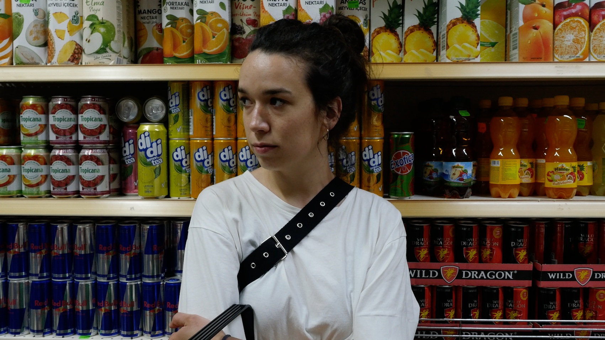

Sarah Fischer was born in 1993 and grew up in Stuttgart, Germany. In 2012 she spent a year in Bogotá, Colombia for a social exchange program, after which she stayed to study at the conservatory at “Escuela Nacional de Cine, in Bogotá. Upon returning to Germany, a script development internship and various projects in set management (eg. “The Silent Revolution” by Lars Kraume) and 2nd AD (eg. “Wuff” by Detlef Buck) followed. In 2017 she shot her first film in Germany. She has been a student at the German Film and Television Academy Berlin since October 2018.
In her own work she explores various aspects of identity in the context of society. As both a writer and director, she often works with themes such as sexuality, trauma and family dynamics.